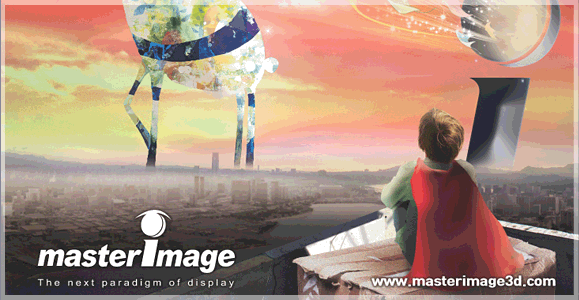
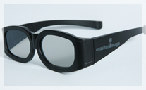

世界が認めた!世界中で急速に勢力を伸ばしている最新の3Dシステム!!

MASTER IMAGE はシルバースクリーンを使用しており、プロジェクターから投影された映像は、高回転する円形偏光フィルターによって、左右に分かれた輝度の高い３Ｄ映像を映し出します。また、残像減少率を改善したことで、より明るい鮮やかな映像を映し出します。
対応する偏光３ＤメガネMI-G100は軽量化されており、フレームは耐久性に優れ、レンズは高品質の偏光板で作られていますので、長時間でも快適に迫力のある映像をお楽しみ頂けます。
鑑賞料金
通常の鑑賞料金プラス400円で3Ｄ作品をご鑑賞頂けます。
3Dメガネ（MASTER IMAGE用）はお持ち帰り頂けます。
次回鑑賞時にお持ち頂ければ、3D鑑賞料金を
100円引き（3D鑑賞料金400円→300円）させて頂きます。
- ※前売券、シネマサンシャインCINEMA TICKET、シネマサンシャインINVITATION TICKET（招待券）、メンバーズカードのポイントによる無料鑑賞、各種割引券もプラス400円でご利用頂けます。
- ※3Ｄ作品をご覧になりますお客様は2歳以下のお子様でも3Ｄメガネを利用される場合、鑑賞料金をいただきます。予めご了承ください。 なお、2歳以下のお子様の3Ｄ鑑賞料金は1,400円です
導入劇場